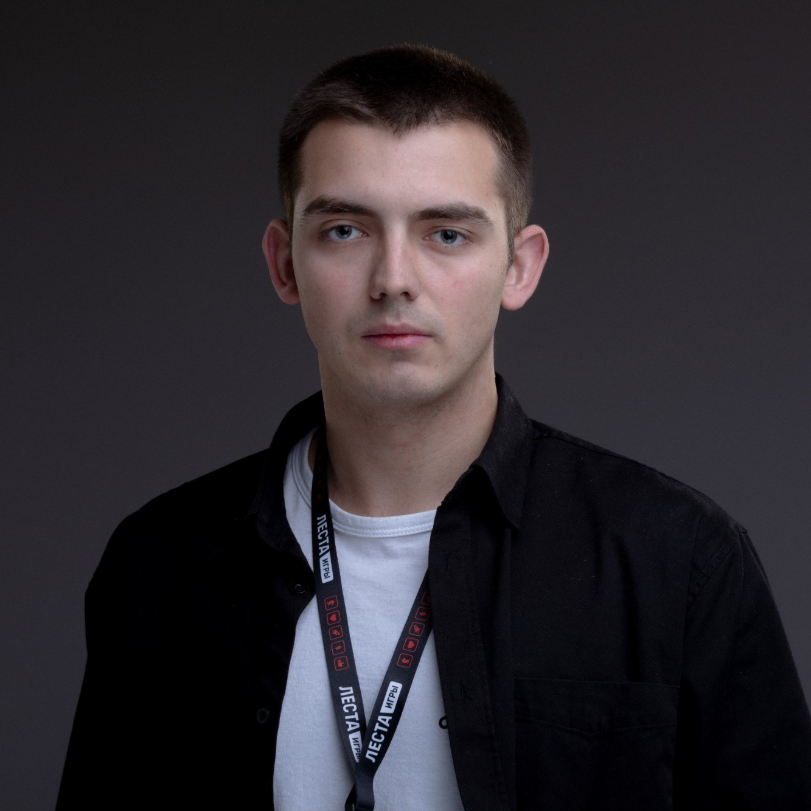

Venta Dynamics — независимый проект дизайна и разработки. Работаем на результат, а не на тренды.

За Venta Dynamics стоит один специалист: дизайн, код и коммуникация — в одних руках, без агентства и лишних передач по цепочке.
Все вопросы и правки — напрямую с исполнителем, без менеджеров и пересказа через третьих лиц.
Каждая задача проходит через одного человека — от идеи до финального результата.
Приоритет — глубина проработки, а не количество проектов.
Айдентика, логотип, гайдлайн — основа, на которой строится всё остальное.
Интерфейсы для сайтов и продуктов: сетка, типографика, взаимодействие.
Фронтенд и бэкенд — от лендинга до сложного веб-приложения.
UX-исследование, прототипирование, дизайн-система для команды.
Веб-приложение · дизайн-система
Мобильное приложение
Веб-сайт · разработка
Разбираемся в задаче, аудитории и ограничениях проекта.
Формируем структуру, типографику и визуальную логику.
Собираем интерфейс и код, готовый к продакшену и росту.
Выпускаем продукт и сопровождаем после релиза.